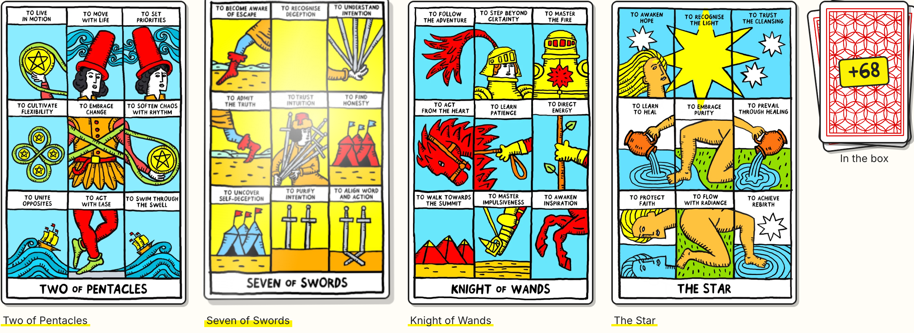
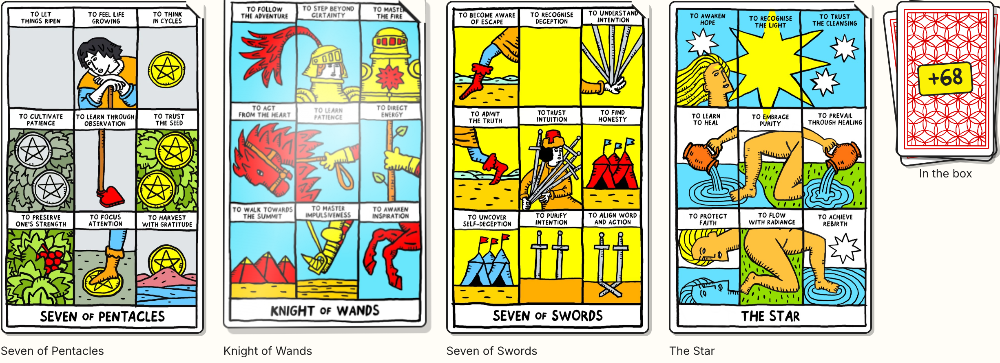
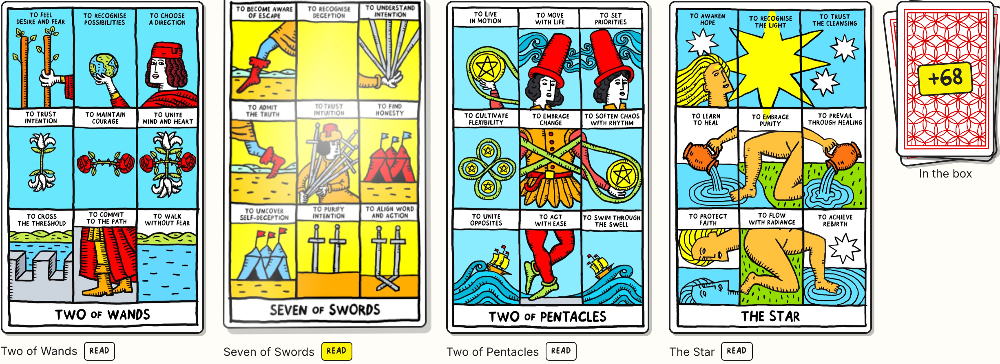

60 ms
60 ms 120 ms
120 ms 180 ms
180 ms 240 ms
240 ms 300 ms
300 ms 360 ms
360 ms 420 ms
420 ms 480 ms
480 msOne card, photographed every 60ms from the moment it starts turning. Top row: the live site. Bottom row: the preview.
60 ms120 ms180 ms240 ms300 ms360 ms420 ms480 ms 0 ms
0 ms 60 ms
60 ms 120 ms
120 ms 180 ms
180 ms 300 ms
300 ms 360 ms
360 ms 420 ms
420 ms 480 ms
480 ms| Live | Preview | |
|---|---|---|
| Flips seen | 22 | 19 |
| Turn, median | 483 ms | 483 ms |
| Turn, range | 466–489 ms | 483–484 ms |
| Rest between turns | 2600–4400 ms | 2667–4266 ms |
| Peak rotation | 90° | 90° |
Same halves (280 ms each on the same easing curves), same rest window (2500–4300 ms), same stagger.
Each shot has the second card hovered, so you can see the resting state and the active state side by side.
A thin yellow line under every card name at rest; it grows into a marker stroke on hover. Permanent, so it reads as "these are links" without a word.

A small ink corner on every card, as if the card is lifting off the pile; it opens further on hover. Most "paper" of the three.

A tiny ink tag beside each name, filled yellow on hover. Clearest, but it adds a word to every card.
